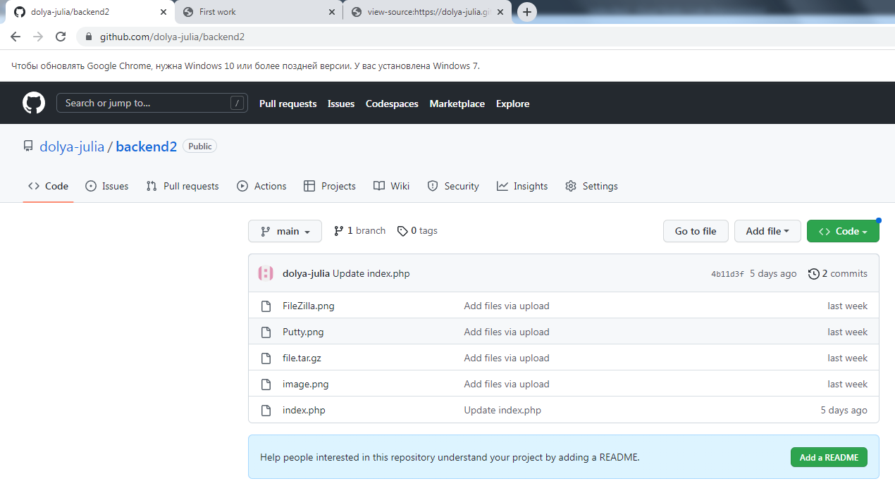
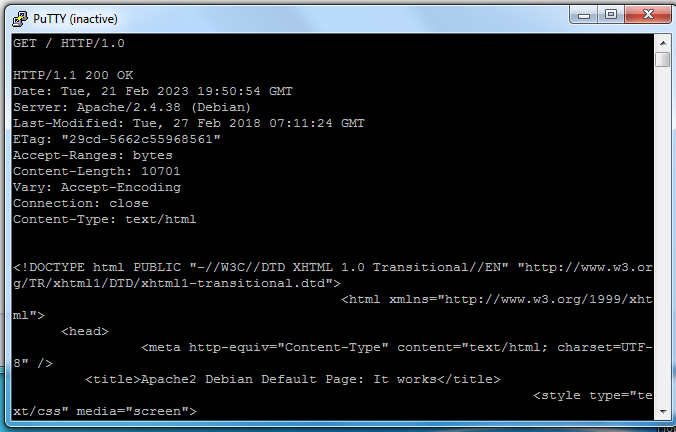
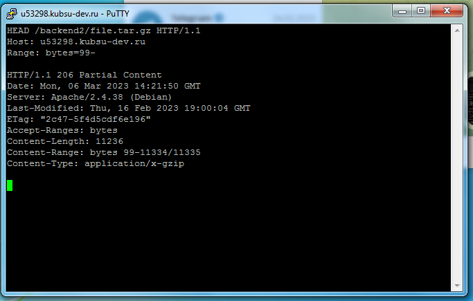

-
Залить файлы на веб-сервер через Git

-
Проверить загрузку файлов из учебного домена
Проверить работоспособность index.php
В файле index.php в header передавалось 'HTTP/1.1 404 Not Found', для нормальной работы программ пришлось убрать эту строку, так как состояние '200 OK' передается по умолчанию
-
Задания выполнялись с помощью программы Putty

-
Получить главную страницу методом GET в протоколе HTTP 1.0
HTTP - это протокол прикладного уровня, язык, которым клиенты и серверы World Wide Web пользуются для общения между собой.
GET — метод для чтения данных с сайта. Он запрашивает представление ресурса. Запросы с использованием этого метода могут только извлекать данные и не должны никак влиять на эти данные.

-
Получить внутреннюю страницу методом GET в протоколе HTTP 1.1
HTTP 1.1 - новая версия HTTP. В ней были добавлены заголовок запроса Host, работа с прокси, эффективность передачи данных, несколько запросов на соединение
-
Определить размер файла file.tar.gz, не скачивая его
Метод HEAD запрашивает ресурс так же, как и метод GET, но без тела ответа.

-
Определить медиатип ресурса /image.png
Медиа тип - это стандарт, который описывает природу и формат документа, файла или набора байтов(image/png)
-
Отправить комментарий на сервер по адресу /index.php
Метод POST используется для отправки данных на сервер. Часто вызывает изменение состояния или какие-то побочные эффекты на сервере.
-
Получить первые 100 байт файла /file.tar.gz
Заголовок запроса Range указывает серверу какую часть документа ему необходимо вернуть.

-
Определить кодировку ресурса /index.php
Кодировка сайта — это свойство веб-ресурса, благодаря которому пользователь может увидеть понятный ему текст на экране монитора(UTF-8)
-